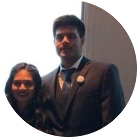

|  |
Jeet PatelCollege Student at California State University Long Beach
I am a College Student trying to enter the Web Development and Software Developemnt industry. |
| Dates | Work |
|---|---|
| 2021 | Jr. Analyst at Ventura Pranas |
|
|